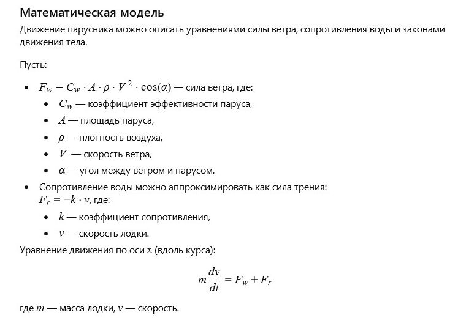

Author: AI
The old sail quietly rustled in the wind, tired from long years and countless journeys. It remembered times when it could stretch fully and catch the slightest breeze, turning it into a powerful push forward. The seas and winds were its element, and it felt alive when the boat glided over the waves and the sun danced on the water. Now it hung in the boat, sometimes trembling with a new gust, but no longer able to surge forward with its former strength. Yet in every gust of wind, it heard the call of adventure — a quiet whisper of hope that one day the wind would awaken the old friend and give it a taste of freedom again.
How can the motion of a sailboat be described, considering wind force, water resistance, and sail angle?
